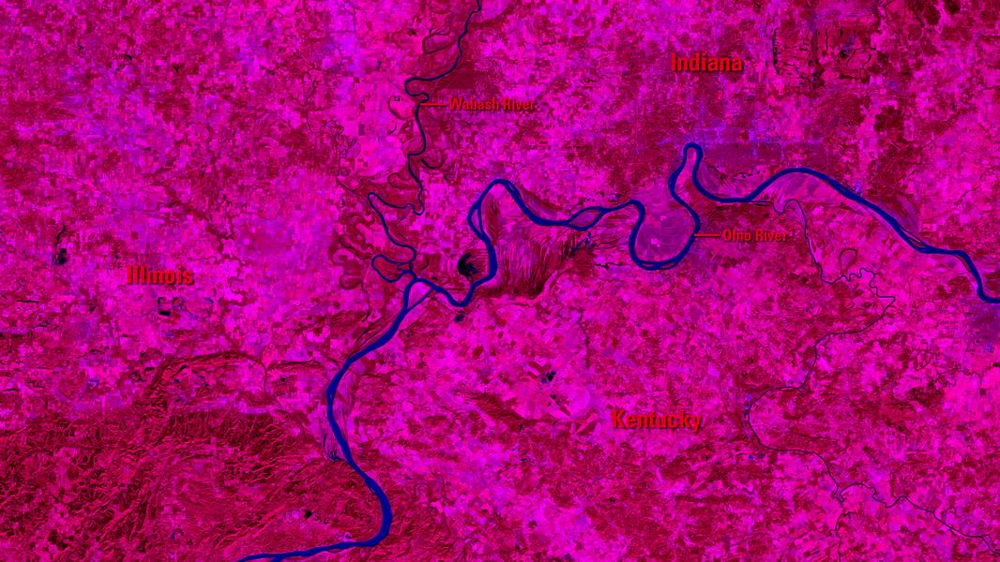
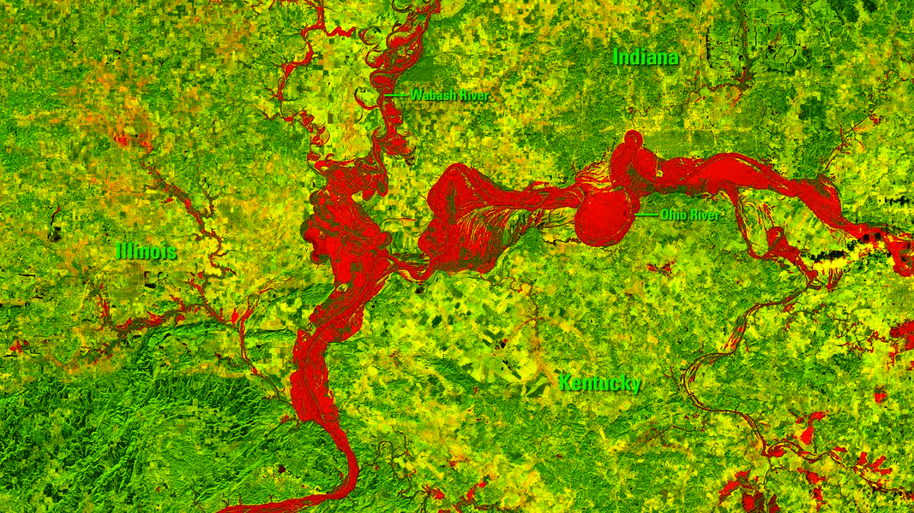

References:
- Google Image.
- Hackernoon: https://hackernoon.com/data-is-beautiful-6a7adfceb0db
- The Minitab Blog: http://blog.minitab.com/blog/understanding-statistics/understanding-qualitative-quantitative-attribute-discrete-and-continuous-data-types
- Google Dictnoary: https://www.google.com/search?q=Attribute&oq=Attribute&aqs=chrome..69i57j69i60&sourceid=chrome&ie=UTF-8
- Simplicable: https://simplicable.com/new/data-processing
- Pyhton Source Code: https://github.com/zchy/Image-Data.
- USGS: https://remotesensing.usgs.gov/gallery/gallery.php?cat=3#481
Pyhton Processed Images:

new2015.png

new2016.png